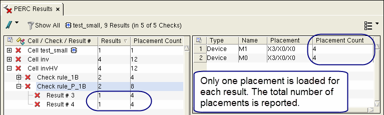

Speeding Up Database Loading by Viewing One Placement of Results in Calibre PERC
You can choose
to view only one placement for each hierarchical result when loading
a database in Calibre RVE for PERC. This can speed up the loading
time for large databases. The option “Show only one placement for
each hierarchical PERC result” on the Options tab
in the LVS/PERC/PEX category must be enabled
when you load the database.
Prerequisites
Calibre PERC results are open in Calibre RVE. See “Opening Calibre PERC Results in Calibre RVE”.
Procedure
- Click the Options button (
 ) to open the Options pane.
) to open the Options pane.
Results
Only one placement for each hierarchical result is loaded and the column Placement Count is added to the tree view and the result view when “Show only one placement for each hierarchical PERC result” is enabled. This is shown in the following figure.
Figure 1. Viewing One Placement
of Hierarchical Results in Calibre PERC

When highlighting results, only one placement is highlighted by default. You can highlight all placements by right-clicking a result and choosing Highlight All Placements; however a maximum of 5000 placements is highlighted in order to provide reasonable performance.